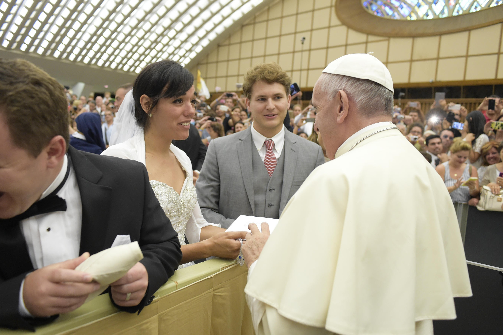

For our honeymoon in 2016, my husband and I went to Italy for 2 1/2 weeks! We were so excited to get free champagne on the plane!

Our first week of the trip we planned on being Rome, where we would have an opportunity to meet and greet the Pope, along with many other newlywed couples from around the world

When In Rome...
After being up since 4:30 AM and not being able to eat or drink anything until the Papal audience was over around 10:30 AM, needless to say we were exhausted and in desperate need of sleep. We took the break we needed and then didn't waste a moment of our Roman Holiday to continue living in the special moment.
During on week in Rome we walked over 25,000 steps a day! We explored as much of Rome as possible and enjoyed every minute of it.

We even made a day trip to Assisi!
For the second week of our Italian adventure, we traveled to Sicily, where my maternal ancestry stems from. Although I had lived in Rome previously, I had never been there before.
Another strong incentive for wanting to go to Sicily is to meet my mom's first cousin, who lives there, for the first time.
After such an active week in Rome, we spent the majority of the time in Sicily relaxing in a beach cabana drinking tasty Italian drinks while soaking up the beautiful scenery.

Probably one of the most memorable parts of our journey in Sicily was driving through the Sicilian countryside in a rental car. We had no idea there was such a vast variety in types of landscape and scenery.

We had so many incredible experiencea and couldn't have asked for a better time, even though we had to sleep in one of the London Airport cafes on the way home, which was less than ideal.